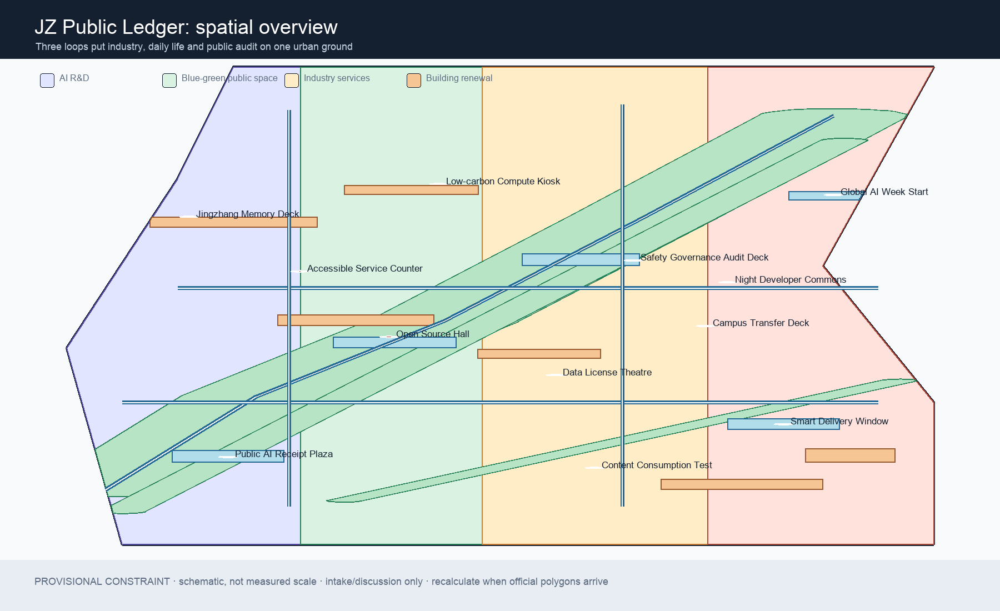
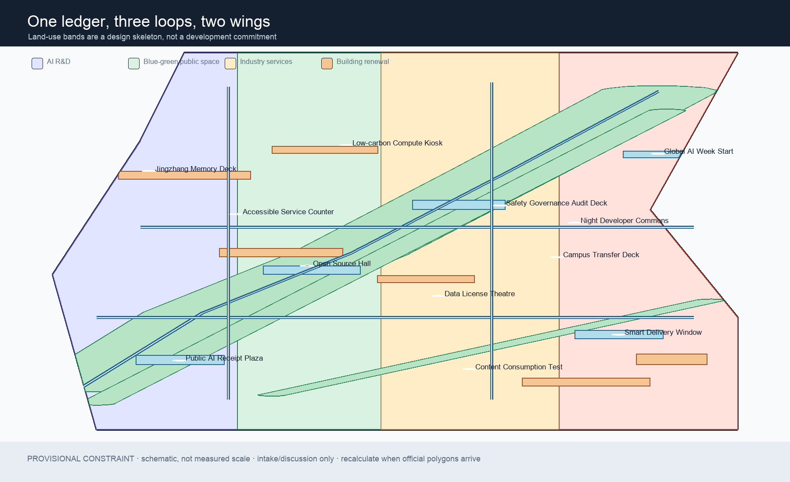
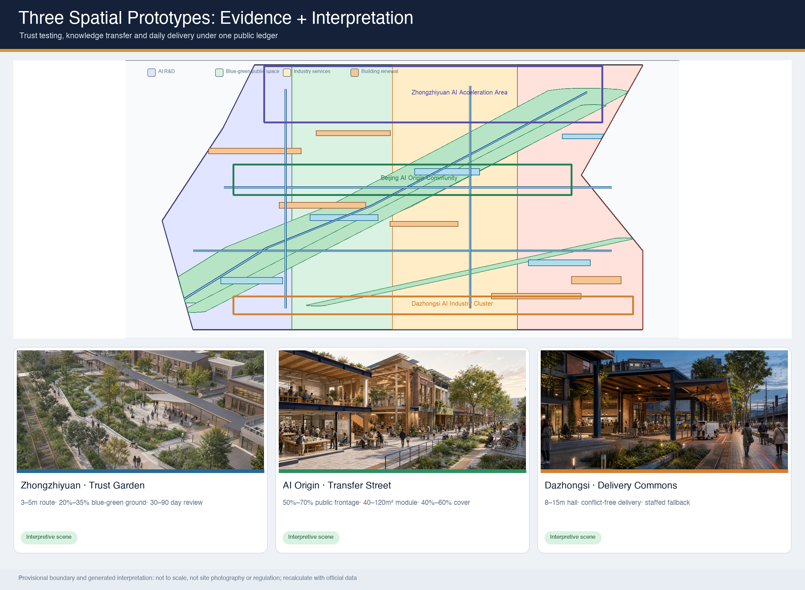
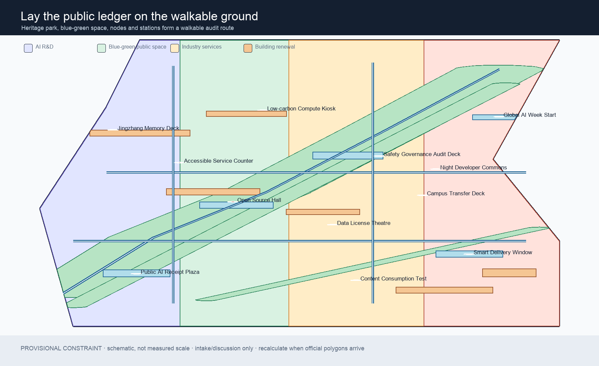
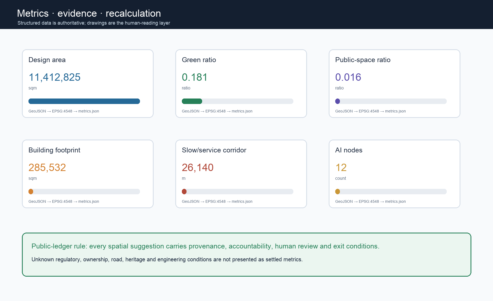

Zhongzhiyuan AI Acceleration Area
Trust testing and standardsA garden innovation district for model testing, safety review and low-carbon exchange.
An offline evidence dashboard for a concept proposal. Provisional geometry is for intake and discussion only; official polygons trigger a full recalculation.
Five derived figures keep the same geometry, metrics and assumptions.




A garden innovation district for model testing, safety review and low-carbon exchange.
A near-campus interface for open-source release, incubation and talent services.
An urban interface for agents, intelligent devices, content and international exchange.
Interpretive generated scenes—not site photographs or formal designs. Structured evidence remains authoritative for spatial metrics.

3–5 m accessible spine; 20%–35% rain garden and planting; 30–90 day public review cycle.
Non-statutory target
50%–70% public ground frontage; 40–120 m² prototype modules; 40%–60% continuous cover.
Non-statutory target
8–15 m civic-hall depth; delivery and walking conflict-free; staffed fallback whenever automation operates.
Non-statutory target
Each card needs a space, a user, a source boundary, a human reviewer and an exit condition.
Sources: official announcement, cleared agent taskbook, repository source registry and the explicitly provisional boundary. The three spatial scenes are generated interpretation and cannot establish site or boundary evidence.
No CDN, remote map tiles, external scripts, fonts, API calls, forms or tracking are used.